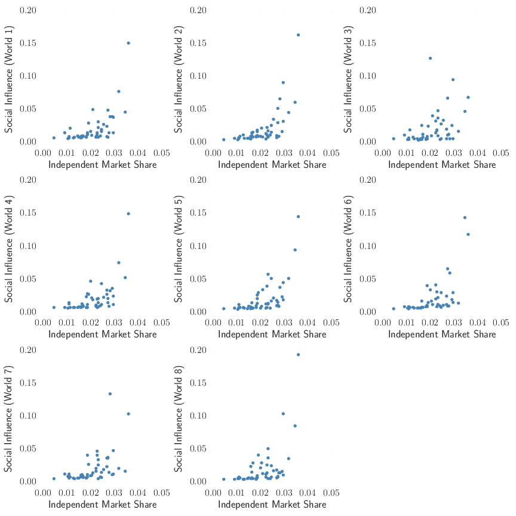

Lecture 1 Musings
Lecture 1: When things #getweird
There are three main readings that go along with the first lecture and I adore all of them. The point of these readings is to:
- Establish that complexity is a business concern
Samuel J. Palmisano, “A Note to Fellow CEOs,” IBM, 2010. - Build a basic definition of what complexity is and how it can apply to a business sector
Robert M. May, Simon A. Levin, and George Sugihara (2008) Nature 451, 893-895. - Grapple with the fact that social influence moves our decision-making away from Homo economicus
Matthew Salganik, Peter Sheridan Dodds and Duncan Watts, Science, 311(5762), 854–856.
Marked as advanced, but I believe that this manuscript is worth reading even if it is a struggle
Since this is an MBA there are really two fundamental questions that will underpin the entire course:
- What is complexity? Where does it exist and what drives it?
- How do I manage the uncertainty that this complexity creates?
The first question is really a more proper way of stating the question that I start the first lecture with:
How do small ideas get (really) big?
The second question is something that you all care deeply about (I'm certain about this because I've been contacted by multiple students asking it before I even started teaching!)
How do I make my idea get really big? / How do I predict if my idea will get really big?
(same question really, just at different steps in the process!). During the course I will introduce several methods to handle these questions that can be used in different business/problem contexts (see Lectures 3, 4, 6, 17, 18). But before we get to that point we really need to understand the first question.
What is complexity?
Our first question is shockingly difficult, as you can probably gather from how abysmal the Wikipedia page is. A perfectly fine definition of complexity is 'the study of the phenomena which emerge from a collection of interacting objects', but that doesn't really create much in your mind.
As a specific, simple example I like to think of a pile of sand. Most of us played in a sandbox when we were kids, so we remember building a big pile of sand and then pour more sand on top of it to make the pile get bigger (ah! to be young again!). A sand pile seems dead simple, right? Like a classic, boring example that you would have had to deal with in basic physics when you started college.
So let's think about this, I remember three basic actions that would come after I added some sand to the top:
- The poured sand stays on the top of the pile increasing the height, sand pile stays intact
- The poured sand causes a minor slide of sand on one sand, sand pile is mostly intact
- The poured sand causes a massive slide of sand that destroys the sand pile, the pile is more a less a pitiful sand clump now
I always attributed these actions to the amount of sand, how I poured it, the wind, the quality of the sand, etc. But people have actually studied this and they found that when they reduce it to the extreme, modelling just individual grains of sand, that this behavior holds.
A-ha! Not so simple after all!
These individual grains are indistinguishable and, this is modelling, so all the parts of the real world are ignored. But in this simple example, the exact same input (adding one grain of sand to the top of pile) causes drastically different behavior depending on the rest of the system.
And that is where the connection comes from. Complexity is where the addition of a single unit can produce wildly different outcomes because the process depends on interactions with the system.
It sounds crazy, but you see examples like this all the time. Here's two direct examples:
- How many people buy your product based on one tweet. The action is the same (publishing a tweet), but its effects differ dramatically based on who does it, when, the context, and other features.
- Purchasing of a simple black dress. Some years fashion states that a simple, black dress is "in" and it flies off the shelves. Other years, that simple, black dress is "out" and you can barely give it away. The product never changed, just consumer desire (the system).
Now you're probably stricken with either one of two reactions: (i) these examples are too simple or (ii) these examples are obvious. If you're in the first camp, I'll say that you're right but that we can accomplish a lot with really simple, little models. If you can get an answer in an uncertain situation with 80-90% accuracy that uses a simple model that you can explain to your C*O I would call that a slam dunk. If you're in the second camp, congrats! The beauty of this research is that a lot of it is obvious after the fact; unfortunately, we lack hindsight until someone runs a study.
Moving beyond a simple sand pile
But you may not be interested in the advertising/product management examples I've given so far and that's fair. That's where the paper by Sugihara, May, and Levin comes in. They look at the financial system (using the term ecosystem/ecology) and how failure propagates, with this specific paper coming out of the financial collapse of 2008. They point out how complicated and complex the relationships between financial instituations have become. This deeply intertwined network of connections leads to a system that is typically stable, but when one special, awful event occurs can also propagate and tear the system apart.
This thought is exactly the same one that exists in our sand pile. On a monthly basis most of these financial institutions probably experienced some bet/investment that didn't pan out leading up to 2008. There may have been a minor write down or it could have been covered by a gain in a different sector, but it didn't lead to a catastrophic failure that then spread from one institution to another. The bets on derivatives of subprime mortgages did though in early 2008---and those effects burned through the financial world like a forest fire.
Complexity is inherent when we look at systems of interconnected partners. If you're interested in policy, I believe you can immediately see the insight here. If the industry that you focus on is heavily connected, then it is likely that one failure could rip it apart.
This happens to multi-national organizations when they manage their supply chains though. If you rely on a widget to make a product, you can hedge some of your risk by purchasing it from multiple suppliers. That way if anything happens at a single supplier then you could just shift some of your order volume to your other suppliers (or at the very worst operate at a slightly reduced capacity). However, if all your suppliers source a single essential component of your widget from a single, upstream manufacturer then your entire supply chain could come to a halt if there is an issue at that upstream manufacturer---one that you don't even purchase from directly!
The piece de resistance (no accents because I'm too lazy)
The final part is actually the Salganik, Dodds, and Watts paper on an artificial cultural market. I actually wrote about this study earlier this year (it was a favorite part of Watts' Everything is Obvious book for me), so I won't repeat myself too much. But I do want to post this graph of the market share in the different worlds and try to make one additional point.

So if you read the previous blog post you understand the experiment. If you read the paper you'll understand the graph, but that was optional so I'll go over it. On the x-axis is the market share that a song has in a world where don't allow one person to influence another (we hide hte number of times a song was downloaded and randomize the order that we present the songs in). On the y-axis we have the market share for a song when we let the users know the number of downloads and rank the songs by popularity.
If we didn't influence each other we would expect all of the points to have the same value on both the x- and y-axes. We can tell that they differ greatly though, which was the point that I covered in the last blog post.
Now for the real a-ha! moment. The big take-away here is that the same song doesn't have the most market share in every world. In fact, it isn't even the top two or three songs that always win! You can see this if you look at World 3 or 7.
In some sense, this is pretty easy to rationalize. If we're susceptible to the influence of each other then sometimes, some odd-ball song or product will really take off (chumbawumba anyone?) if the circumstances are right. But the problem is how can you guess that the circumstances are right?
This would all seem trivial, if it weren't for the fact that deciding which acts to invest money in and develop is someone's job and that person has a boss that they have to report to. Sure, the best song without influence won a number of times (5 out of 8), but that success ratio isn't something that most of us would want to present to the higher ups!
Some final thoughts
- Complexity is something that we must tackle in the modern business world. There's a reason why complexity and its related topics have been the number one concern of CEOs in the last three IBM surveys.
- Everything is obvious once you know the answer
- Small initial changes can lead to hugely different outcomes